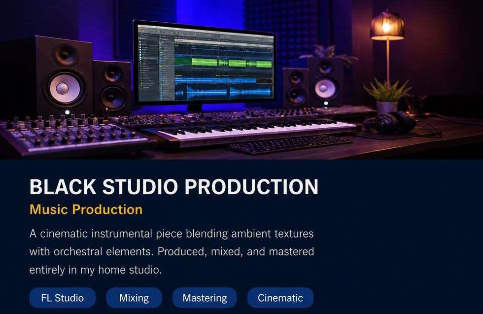
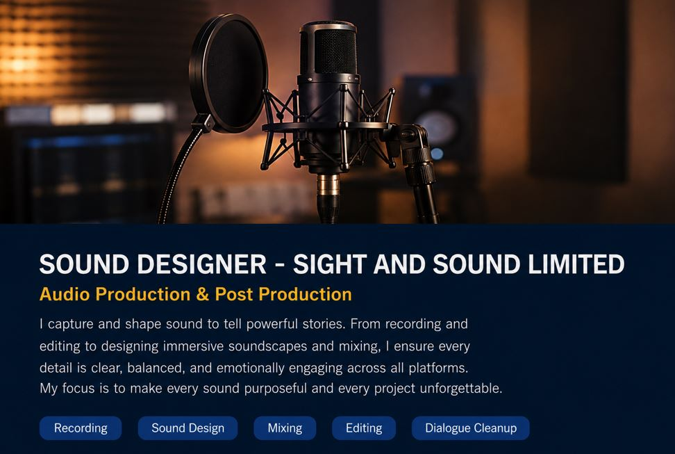
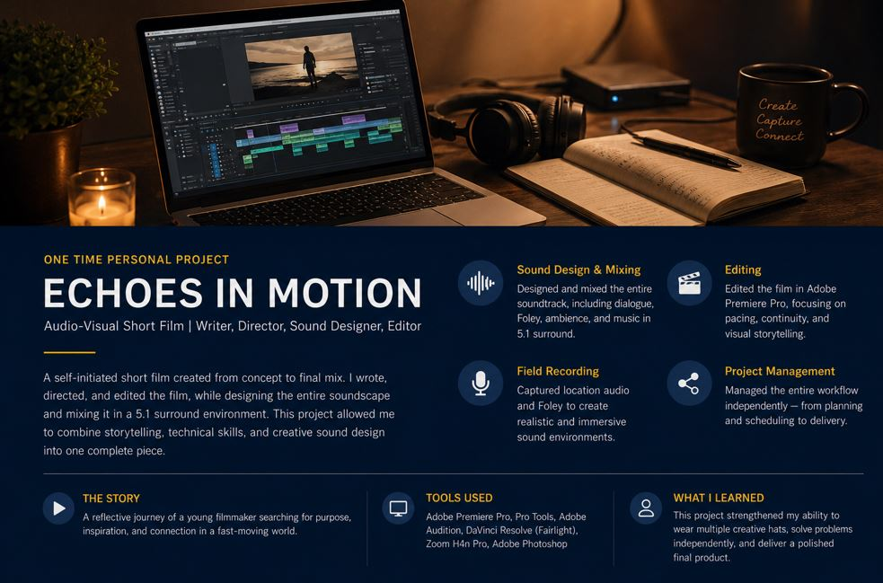

Crafting stories through sound.
I create immersive sound experiences for film, television and digital media through creative storytelling, technical precision and collaborative production.
Passionate about creating immersive sound that brings stories to life.
I am a final-year Film student specialising in Sound Design and Film & Television Post-Production. My journey into audio began through freelance music production, where I worked with independent artists to record, mix, master and produce music.
Today, my focus is creating immersive sound for visual storytelling. I enjoy building atmosphere, enhancing emotion and supporting narratives through carefully crafted audio. I am continually expanding my knowledge of post-production workflows while preparing for a professional career within Australia's screen industry.
Melbourne, Australia
iangathecha15@gmail.com
+61 475 863 286
Creating immersive soundscapes that enhance storytelling and audience engagement.
Capturing authentic environmental audio for realistic cinematic experiences.
Cleaning and enhancing dialogue for clarity and professional sound quality.
Balancing dialogue, music and effects into polished final mixes.
Preparing final audio with consistent loudness and professional quality.
Supporting visual storytelling through creative audio workflows.
A selection of projects demonstrating my technical skills, creativity and passion for sound.

Produced instrumentals, recorded vocals, mixed and mastered tracks for independent artists while managing projects from concept to final delivery.

Experimental sound design projects exploring ambience, environmental recordings, cinematic sound effects and creative audio manipulation.

This section will showcase film and television projects completed throughout my studies and professional career.
Audio services for film, television and digital media.
Creating cinematic soundscapes that enhance emotion, atmosphere and storytelling.
Cleaning, repairing and preparing dialogue for professional productions.
Capturing authentic environmental sounds for immersive productions.
Balancing dialogue, ambience, effects and music into polished final mixes.
Recording, producing, mixing and mastering music for independent artists.
Supporting productions through professional audio editing and finishing workflows.
Interested in my experience and qualifications? Download my resume to learn more about my education, technical skills and professional background.
Download CVWhether you're producing a short film, documentary, commercial or creative project, I'd love to hear from you.